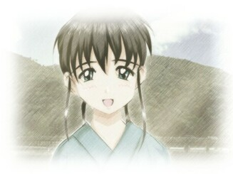

真田ゆり子
2001.12.01
|  |
※以下の内容は、追加シナリオのネタバレを含むのでご注意ください。
追加シナリオのトゥルーＥＤを見てから、読むようにしましょう。
彼女のことを語るには、もう一枚ＣＤが必要になりそうです。
冗談はともかくとして（半分は本気）、真田ゆり子というキャラクターについて語らせると際限がなくなりそうなので、要点をかいつまんでお伝えします。
（１）モデルについて
特定のモデルとなる実在の人物、およびキャラクターは存在しません。まあ言ってみれば、作者の私自身の妄想および好みを多分に（異様に）投入し凝縮した結果というべきでしょう。
「真田」という苗字は、凛々しいイメージのある苗字をつけたかったから。その一方で、名前を「ゆり子」にすることでその角張った感じを和らげ、丸みを帯びた印象を与えるようにしています。
「ゆり子」という名前は、古風でかつ素朴な女らしさ－というイメージからきていると思います。最初は「百合子」とかいうように漢字でつけようと思ってたんですが、平仮名で書いてみたところ、純朴な感じがしていいかも－と思って、平仮名表記に決定しました。
ちなみに「ユリコ」という名前で思い出すのが、「無責任艦長タイラー」のユリコ・スター少佐ですね。私がＣＧを描きはじめるよりちょっと前からテレビ放映していたアニメですが、初期の私の絵柄にかなりの影響を与えています。「ゆり子」という名前に凛々しいイメージを求めるのも、ひょっとすると彼女の影響なのかもしれませんね。
（２）性格設定
もうモロに妄想入ってますので以下略。
…いやぁ、そのまんま妄想でしょ。幼馴染みで、何でも主人公のことはよく分かってて、のんびり型で、天然ボケで、明るくって人なつっこくて世話好きで。
ここまでベタだと、開き直るしかありませんね。
でも、そのベタな性格設定そのものが「現実ではない」（時の杯によって創り出されたかりそめのもの）ことを暗示している……のかもしれませんが、少なくとも造ってる本人はそこまで考えて造ってません。これはあくまでも単純な好みの問題です。
追加シナリオではほんのちょっと、すねたり皮肉を言ったりするシーンがあるんですけど、それでも基本はあんまり変わってませんね。
基本的に彼女は、気分が大らかで芯の強い女性なのだと思います。だから、人の欠点をあら捜ししたり、人の行動の動機を悪く解釈したりしないので、他の人との間に壁を作ることはないでしょう。このあたりの性格は、聡志のおばあちゃんとよく似ているかもしれません。
あと、性格に似合わず彼女は理数系です。おおらかなわりにはロジック的な思考が好きで、しかし要領が悪いので仕事が先へ進まなくなるタイプ。こんなところは、まるっきり私と同じです。だからこそ、造ってる本人の理想の彼女像だといえばそれまでなんですが。
（３）初恋と幼馴染みと
「幼馴染み」というだけで触手…じゃなくて食指が動いた方もおられると思いますが、本来の王道的な「幼馴染み」とは少し違っているかもしれません。
それはまず、「幼馴染み」ではあるけれど、常に顔をつき合わせている存在ではないということ。幼い頃も、だいたい年に１度しか会わないわけですから、現実生活での接点はあまりなかったわけです。
そして、主人公は早い段階から「初恋」に気づいているということ。これは前者の理由にも関係していますが、普段あまり接する機会のない相手だからこそ、恋が芽生えるものですよね。いつも顔を突き合わせていると、近すぎてその気持ちに気づかない…なんてことになるわけですが（幼馴染み萌えの方々にとっては、こーゆーのがたまらんのでしょうが）。
ですからこのゲームでの「初恋」は、遠い存在への憧れから発生したもの、ということができます。どちらかというと現実感が希薄で、憧れのイメージの中で醸造された薄っぺらな恋愛感情。初恋なんて言ってみればそういった「憧れ」が命みたいなもんですが、この場合もそうですね。
そしてゲームが始まると、最初にゆり子は帽子をかぶったお嬢様スタイルで登場しますよね。これは「田舎」のイメージからはちょっとかけ離れてる感じがしますが、これも意図的なものです。
綺麗なおねいさん＋白い帽子＋お嬢様スタイル＝憧れのお姫様
てなわけで、再会直後のゆり子は「理想を理想のまま成長させたゆり子の姿」なわけです。もともと「時の杯」は、現実には存在しない（死んだ）人間を、現実時間の中に再現させる道具なわけですから、そのゆり子が現実より理想によって構成されているのも当然です。
かといって、あのゆり子が聡志の妄想の中だけの存在だったわけではありません。まあ言ってみれば、幼い頃のゆり子を、聡志の妄想どおりに成長させた結果がああなる、ということです。ですから、本編のEnding 01で再会したゆり子は、少しばかり性格が想像とは違っていたかもしれません。
でもまぁ、聡志ちゃんLoveなのは変わりないみたいですけどね。
…っつーか、再会したらゆり子がガングロになってたなんてオチだったら、恐らくプレイした人の９９％以上がディスプレイに鉄拳を叩き込むことになりそうなんで、現実もあんまり変わってなかったことにしましょう。一応、追加シナリオの冒頭部分でちょっとフォローしてますが。
（４）物語の見所
やっぱり何を差し置いても、河原での別れのシーンでしょう！
最後に素直になることができて、それでも別れなければならないことをかみ締めながら……
「どうせなら私…大きくなったら、聡志ちゃんのお嫁さんになってあげるって…約束してたらよかったかな……」
致命傷です。
ド卑怯です。
これで退き下がれるヤツは男じゃありません。
この台詞を言わせたくて、あの別れのシーンを仕組んだと言っても過言じゃありません。「幼馴染み」＋「大きくなったらお嫁さんに」は史上最強の定番コンボの一つでもありますが、それをこの場に持ってくることにより、さらに破壊力を倍増させています。音楽といいエフェクト（ＩＥ）といい、ハッピーエンドの次に好きなのがこのシーンですね。
（５）まとめ
もう、ああだこうだと言い訳は致しません。
ああ、好きだから作ったんだよこのキャラはッ！！
ソレ以外のなにものでもないんで、開き直ったところでおしまいとしましょう。